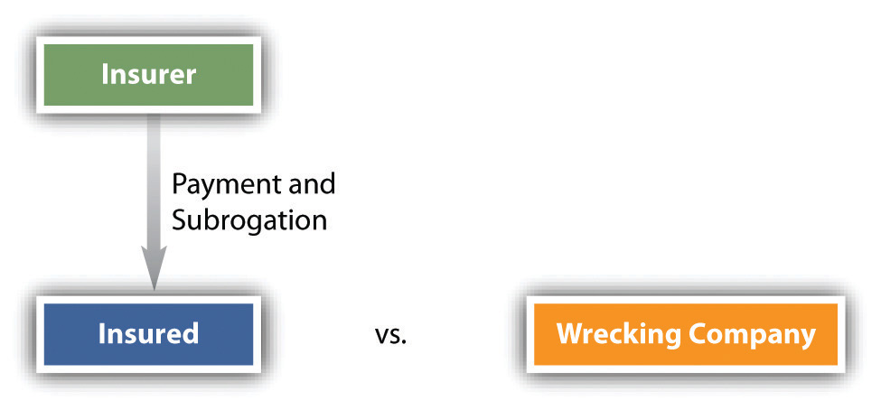

We turn now to a more detailed discussion of the law relating to the three most common types of insurance: property, liability, and life insurance.
It is sometimes said that property is the foundation for a system of free market capitalism. If so, then protecting property is a necessary part of being part of that system, whether as an individual or as a business entity.
As we have noted, property insurance provides coverage for real and personal property owned by a business or an individual. Property insurance is also part of automobile policies covering damage to the car caused by an accident (collision coverage) or by other events such as vandalism or fire (comprehensive coverage). Different levels of coverage are available. For example, many basic homeowners’ policies cover damage resulting from the following types of perils only: fire and lightning, windstorm and hail, explosions, riots and civil commotions, aircraft and vehicular accidents, smoke, vandalism and malicious mischief, theft, and breakage of glass that is part of a building.
A broader policy, known as broad coverage, also includes these perils: falling objects; weight of ice, snow, and sleet; collapse of buildings; sudden and accidental damage to heating systems; accidental discharge from plumbing, heating, or air-conditioning systems; freezing of heating, plumbing, and air conditioning systems; and sudden and accidental injury from excess currents to electrical appliances and wiring. Even with the broadest form of coverage, known as comprehensive, which covers all perils except for certain named exclusions, the homeowner can be left without protection. For example, comprehensive policies do not usually cover damage resulting from flooding, earthquakes, war, or nuclear radiation. The homeowner can purchase separate coverage for these perils but usually at a steep premium.
To purchase property insurance, the would-be insured must have an insurable interestA sufficiently substantial interest in property or someone’s life to support a contract to insure it. in the property. Insurable interest is a real and substantial interest in specific property such that a loss to the insured would ensue if the property were damaged. You could not, for instance, take out an insurance policy on a motel down the block with which you have no connection. If a fire destroyed it, you would suffer no economic loss. But if you helped finance the motel and had an investment interest in it, you would be permitted to place an insurance policy on it. This requirement of an insurable interest stems from the public policy against wagering. If you could insure anything, you would in effect be betting on an accident.
To insure property, therefore, you must have a legal interest and run the risk of a pecuniary loss. Any legal interest is sufficient: a contractual right to purchase, for instance, or the right of possession (a bailee may insure). This insurable interest must exist both at the time you take out the policy and at the time the loss occurs. Moreover, coverage is limited to the extent of the interest. As a mortgagee, you could ensure only for the amount still due.
Prior to the financial meltdown of 2008, many investment banks took insurance against possible losses from collateralized debt obligations (CDOs) and other financial products based on subprime loans. The principal insurer was American International Group, Inc. (AIG), which needed a US government bailout when the risks covered by AIG turned out to be riskier than AIG’s models had projected.
Figure 19.1 Subrogation
SubrogationSubstitution of one person for another who has a legal claim or right. is the substitution of one person for another in pursuit of a legal claim. When an insured is entitled to recover under a policy for property damage, the insurer is said to be subrogated to the insured’s right to sue any third party who caused the damage. For example, a wrecking company negligently destroys an insured’s home, mistaking it for the building it was hired to tear down. The insured has a cause of action against the wrecking company. If the insured chooses instead to collect against a homeowner’s policy, the insurance company may sue the wrecking company in the insured’s place to recover the sum it was obligated to pay out under the policy (see Figure 19.1 "Subrogation").
AssignmentThe transfer of any rights in a contract of insurance. is the transfer of any property right to another. In property insurance, a distinction is made between assignment of the coverage and assignment of the proceeds. Ordinarily, the insured may not assign the policy itself without the insurer’s permission—that is, he may not commit the insurer to insure someone else. But the insured may assign any claims against the insurer—for example, the proceeds not yet paid out on a claim for a house that has already burned down.
Insurance is a means of spreading risk. It is economically feasible because not every house burns down and not every car is stolen. The number that do burn down or that are stolen can be calculated and the premium set accordingly. Events that will certainly happen, like ordinary wear and tear and the destruction of property through deliberate acts such as arson, must be excluded from such calculations. The injury must result from accidental, not deliberate, causes.
Most commercial property policies contain a so-called coinsurance clauseIn property insurance, a clause that requires the insured to maintain insurance equal to a specified percentage of the property value., which requires the insured to maintain insurance equal to a specified percentage of the property value. It is often 80 percent but may be higher or lower. If the property owner insures for less than that percentage, the recovery will be reduced. In effect, the owner becomes a coinsurer with the insurance company. The usual formula establishes the proportion that the insurer must pay by calculating the ratio of (1) the amount of insurance actually taken to (2) the coinsurance percentage multiplied by the total dollar value of the property. Suppose a fire causes $160,000 damage to a plant worth $1,000,000. The plant should have been insured for 80 percent ($800,000), but the insured took out only a $500,000 policy. He will recover only $100,000. To see why, multiply the total damages of $160,000 by the coinsurance proportion of five-eighths ($500,000 of insurance on the required minimum of $800,000). Five-eighths of $160,000 equals $100,000, which would be the insured’s recovery where the policy has a coinsurance clause.
Liability insurance has taken on great importance for both individuals and businesses in contemporary society. Liability insurance covers specific types of legal liabilities that a homeowner, driver, professional, business executive, or business itself might incur in the round of daily activities. A business is always at risk in sending products into the marketplace. Doctors, accountants, real estate brokers, insurance agents, and lawyers should obtain liability insurance to cover the risk of being sued for malpractice. A prudent homeowner will acquire liability insurance as part of homeowner’s policy and a supplemental umbrella policy that insures for liability in excess of a limit of, say, $100,000 in the regular homeowner’s policy. And businesses, professionals, and individuals typically acquire liability insurance for driving-related activities as part of their automobile insurance. In all cases, liability policies cover not only any settlement or award that might ultimately have to be paid but also the cost of lawyers and related expenses in defending any claims.
Liability insurance is similar in several respects to property insurance and is often part of the same package policy. As with property insurance, subrogation is allowed with liability insurance, but assignment of the policy is not allowed (unless permission of the insurer is obtained), and intentional losses are not covered. For example, an accountant who willfully helps a client conceal fraud will not recover from his malpractice insurance policy if he is found guilty of participating in the fraud.
The major legal development of the century relating to liability insurance has been the elimination of liability in the two areas of greatest exposure: in the workplace and on the highway. In the next unit on agency law, we discuss the no-fault system of workers’ compensation, under which a worker receives automatic benefits for workplace injuries and gives up the right to sue the employer under common-law theories of liability. Here we will look briefly at the other major type of no-fault system: recovery for damages stemming from motor vehicle accidents.
“No-fault” means that recovery for damages in an accident no longer depends on who was at fault in causing it. A motorist will file a claim to recover his actual damages (medical expenses, income loss) directly from his own insurer. The no-fault system dispenses with the costly and uncertain tort system of having to prove negligence in court. Many states have adopted one form or another of no-fault automobile insurance, but even in these states the car owner must still carry other insurance. Some no-fault systems have a dollar “threshold” above which a victim may sue for medical expenses or other losses. Other states use a “verbal threshold,” which permits suits for “serious” injury, defined variously as “disfigurement,” “fracture,” or “permanent disability.” These thresholds have prevented no-fault from working as efficiently as theory predicts. Inflation has reduced the power of dollar thresholds (in some states as low as $200) to deter lawsuits, and the verbal thresholds have standards that can only be defined in court, so much litigation continues.
No state has adopted a “pure” no-fault system. A pure no-fault system trades away entirely the right to sue in return for the prompt payment of “first-party” insurance benefits—that is, payment by the victim’s own insurance company instead of traditional “third-party” coverage, in which the victim collects from the defendant’s insurance company.
Among the criticisms of no-fault insurance is the argument that it fails to strengthen the central purpose of the tort system: to deter unsafe conduct that causes accidents. No-fault lessens, it is said, the incentive to avoid accidents. In any event, no-fault automobile insurance has been a major development in the insurance field since 1970 and seems destined to be a permanent fixture of insurance law.
The two types of life insurance mentioned in Section 19.1.2 "Types of Insurance for the Individual", term and whole-life policies, are important both to individuals and to businesses (insurance for key employees). As with property insurance, whoever takes out a life insurance policy on a person’s life must have an insurable interest. Everyone has an insurable interest in his own life and may name whomever he pleases as beneficiary; the beneficiary need not have an insurable interest. But the requirement of insurable interest restricts those who may take out insurance on someone else’s life. A spouse or children have an insurable interest in a spouse or parent. Likewise, a parent has an insurable interest in any minor child. That means that a wife, for example, may take out a life insurance policy on her husband without his consent. But she could not take out a policy on a friend or neighbor. As long as the insurable interest existed when the policy was taken out, the owner may recover when the insured dies, even if the insurable interest no longer exists. Thus a divorced wife who was married when the policy was obtained may collect when her ex-husband dies as long as she maintained the payments. Likewise, an employer has an insurable interest in his key employees and partners; such insurance policies help to pay off claims of a partner’s estate and thus prevent liquidation of the business.
Unlike property insurance, life insurance does not permit subrogation. The insurer must pay the claim when the insured dies and may not step into the shoes of anyone entitled to file a wrongful death claim against a person who caused the death. Of course, if the insured died of natural causes, there would be no one to sue anyway.
Unless the insured reserves the right to change beneficiaries, his or her initial designation is irrevocable. These days, however, most policies do reserve the right if certain formalities are observed, including written instructions to the insurer’s home office to make the change and endorsement of the policy. The insured may assign the policy, but the beneficiary has priority to collect over the assignee if the right to change beneficiaries has not been reserved. If the policy permits beneficiaries to be changed, then the assignee will have priority over the original beneficiary.
Two types of intentional losses are especially important in life insurance: suicide and murder of the insured by the beneficiary.
In a majority of states, in the absence of a suicide clause in the policy, when an insured commits suicide, the insurer need not pay out if the policy is payable to the insured’s estate. However, if the policy is payable to a third person (e.g., the insured’s company), payment will usually be allowed. And if an insured kills himself while insane, all states require payment, whether to the estate or a third party. Most life insurance policies today have a provision that explicitly excepts suicide from coverage for a limited period, such as two years, after the policy is issued. In other words, if the insured commits suicide within the first two years, the insurer will refund the premiums to his estate but will not pay the policy amount. After two years, suicide is treated as any other death would be.
Under the law in every state, a beneficiary who kills the insured in order to collect the life insurance is barred from receiving it. But the invocation of that rule does not absolve the insurer of liability to pay the policy amount. An alternate beneficiary must be found. Sometimes the policy will name contingent beneficiaries, and many, but not all, states require the insurer to pay the contingent beneficiaries. When there are no contingent beneficiaries or the state law prohibits paying them, the insurer will pay the insured’s estate. Not every killing is murder; the critical question is whether the beneficiary intended his conduct to eliminate the insured in order to collect the insurance.
The willful, unlawful, and felonious killing of the insured by the person named as beneficiary in a life policy results in the forfeiture of all rights of such person therein. It is unnecessary that there should be an express exception in the contract of insurance forbidding a recovery in favor of such a person in such an event. On considerations of public policy, the death of the insured, willfully and intentionally caused by the beneficiary of the policy, is an excepted risk so far as the person thus causing the death is concerned.
Many kinds of insurance are available for individuals and businesses. For individuals, life insurance, homeowner’s insurance, and automobile insurance are common, with health insurance considered essential but often expensive. Businesses with sufficient employees will obtain workers’ compensation insurance, property insurance, and liability insurance, and auto insurance for any employees driving company vehicles. Insurance companies will often pay a claim for their insured and take over the insured’s claim against a third party.
Liability insurance is important for individuals, companies, and licensed professionals. A trend toward no-fault in liability insurance is seen in claims for work-related injuries (workers’ compensation) and in automobile insurance. Life insurance is common for most families and for businesses that want to protect against the loss of key employees.